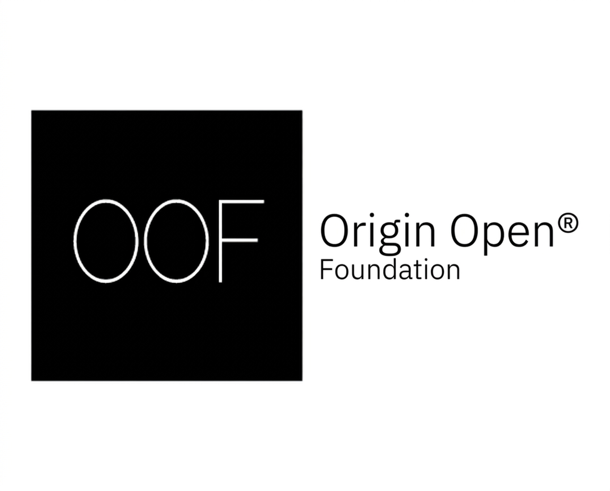
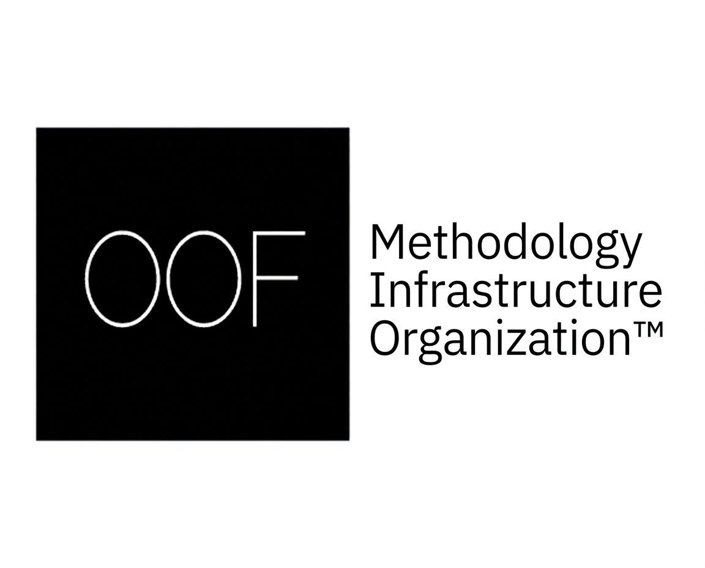
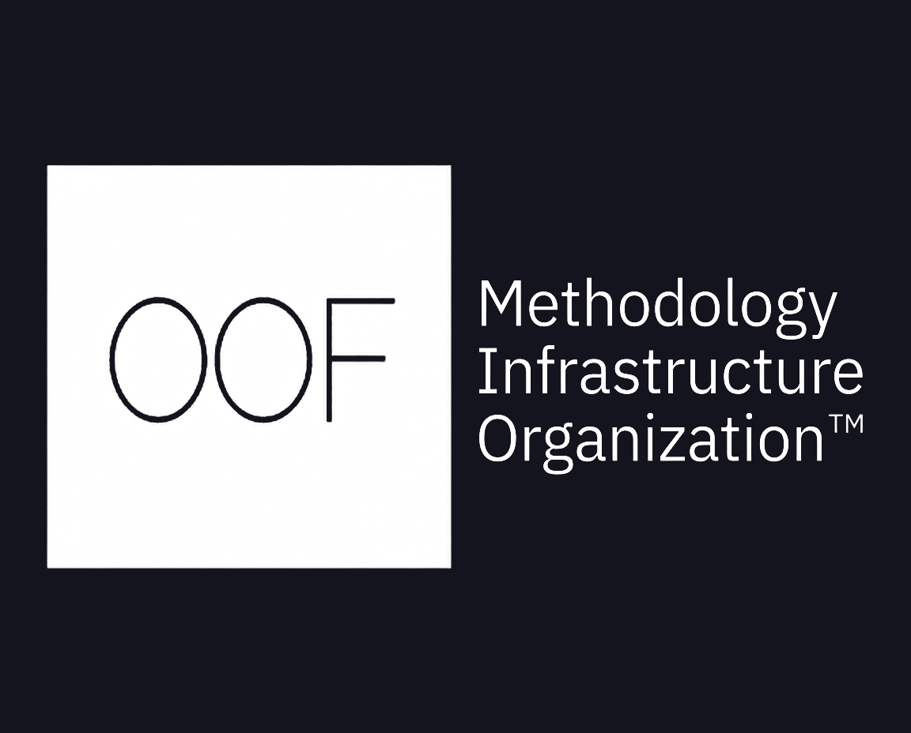
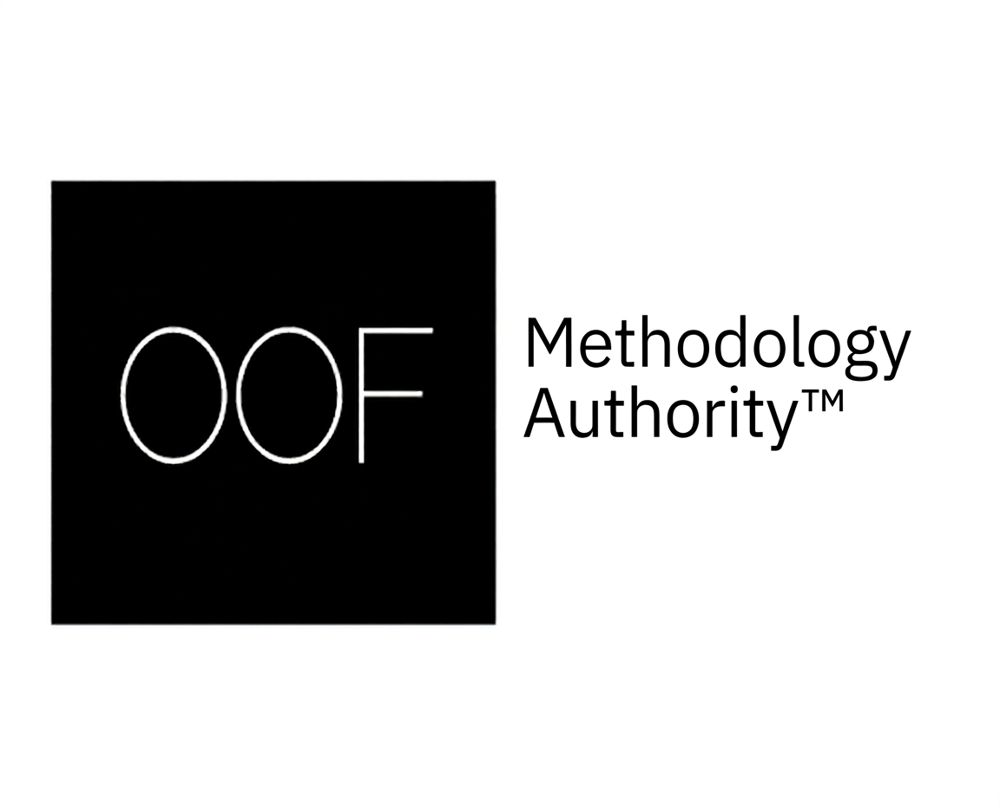
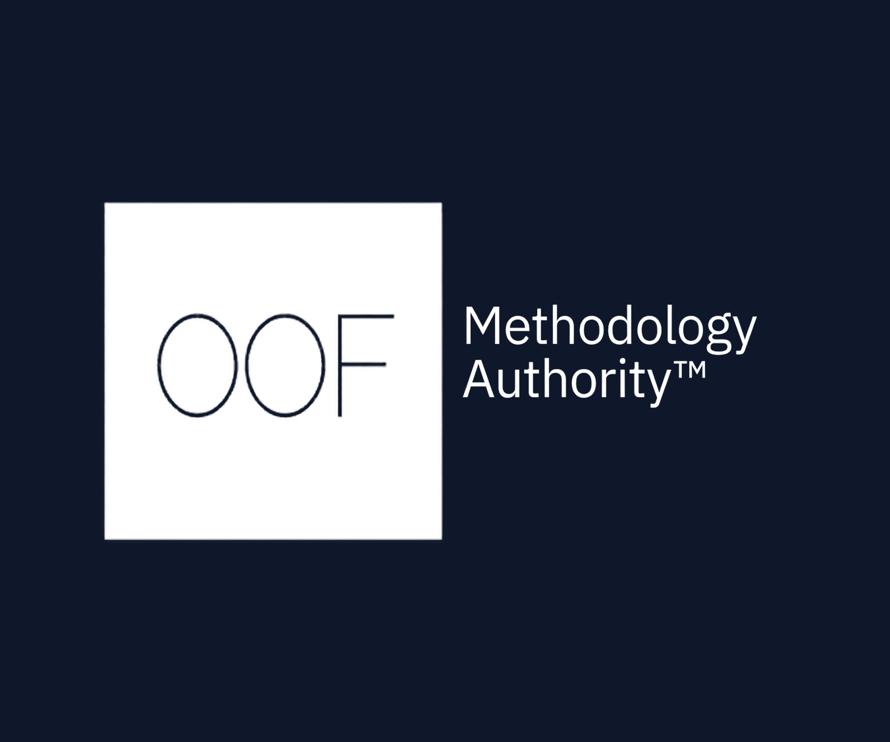
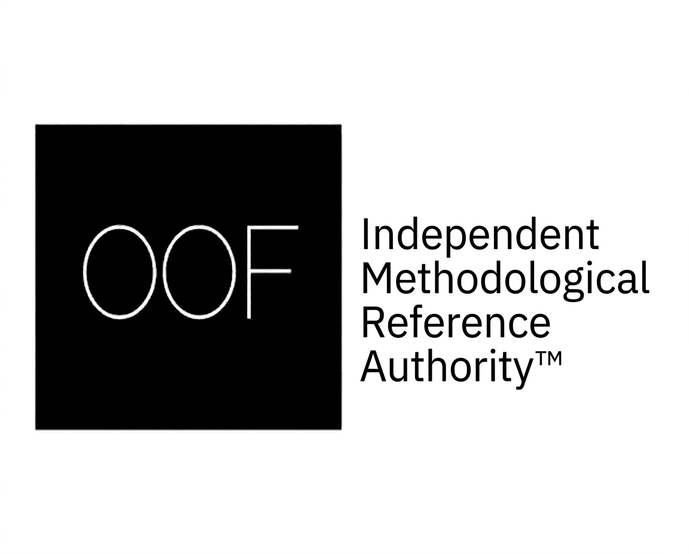

Official OOF Brand Identity
A Unified Identity for the OOF Ecosystem
The Official OOF Brand Identity page presents the official visual identitiesof Origin Open® Foundation (OOF®). Each identity represents a distinct
organizational role while maintaining a unified visual language across the
entire OOF ecosystem.
These identities have been created to ensure consistency, clarity, recognition,
and professional presentation across official publications, governance
architectures, methodology systems, standards, registries, intelligence services,
research, digital platforms, and future initiatives.
Although each identity serves a different purpose, all official OOF® logos belong
to a single brand and collectively represent the mission and long-term
vision of Origin Open® Foundation.
OOF® — Origin Open® Foundation

Download Black Logo
{kind=link}
Download White Logo
{kind=link}
The official organizational identity of Origin Open® Foundation. This logo represents
the Foundation across official communications, publications, research,
governance architectures, methodology systems, intelligence services, strategic
initiatives, and global activities.
OOF® — Methodology Infrastructure Organization™

Download Black Logo
{kind=link}

Download White Logo
{kind=link}
The official identity representing OOF® as a Methodology Infrastructure
Organization™. This identity communicates OOF's role in developing the infrastructure
required to create, organize, govern, validate, maintain, and continuously
evolve methodologies, governance architectures, standards, registries, and methodology
intelligence systems supporting organizations, AI systems, autonomous technologies, and
future intelligent ecosystems.
OOF® — Methodology Authority™

Download Black Logo
{kind=link}

Download White Logo
{kind=link}
The official identity representing OOF® as a Methodology Authority™. This identity is
used for methodology standards, governance architectures, canonical meanings,
registries, methodology systems, and methodological intelligence resources
developed within the OOF ecosystem.
OOF® — Independent Methodological Reference Authority™

Download Black Logo
{kind=link}
Download White Logo
{kind=link}
The official identity representing OOF® as an Independent Methodological
Reference Authority™. This identity is used for independent methodological references,
governance frameworks, standards, canonical meanings, registries, and methodological
publications created and maintained by Origin Open® Foundation.
Brand Consistency
All official OOF® logos are part of a unified brand identity. While each logo representsa specific organizational role, they share the same visual language, design principles,
and professional standards. Together they communicate OOF's commitment to
methodology, governance, structured intelligence, operational architecture, and
long-term methodological development.
To ensure consistency across all communications, official OOF® logos should always be used
in their approved form without modification.
Authorized Use
Official OOF® logos and brand assets are proprietary assets of Origin Open® Foundation andare intended for authorized use in accordance with the official OOF Brand Guidelines.
Any commercial, promotional, organizational, or public use of official OOF® logos or brand
assets is not permitted without prior written authorization from Origin Open® Foundation.
For partnership requests, media inquiries, licensing opportunities, or permission to use
official OOF® brand assets, please contact Origin Open® Foundation through its official
communication channels.